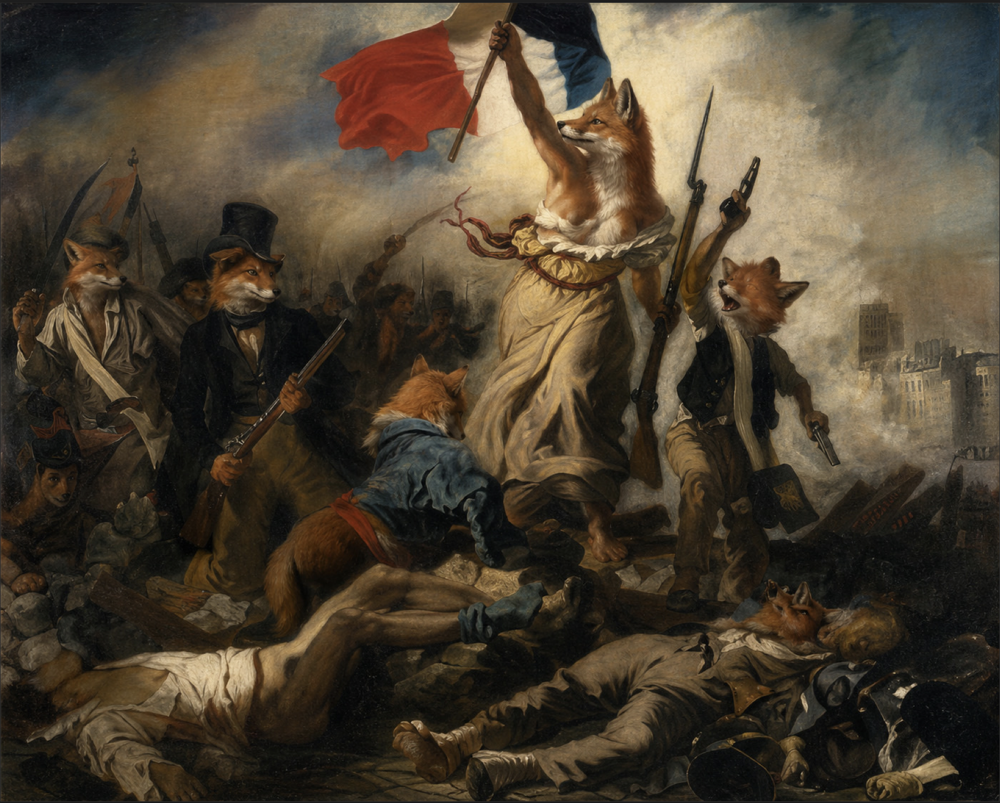

M

La liberté guidant le peuple, Eugène Delacroix, 1830
La Liberté guidant le peuple est une huile sur toile d'Eugène Delacroix réalisée en 1830, inspirée de la révolution des Trois Glorieuses. Devenue un symbole de la république triomphante, ce qui ne correspond pas à l'intention de Delacroix, l'œuvre ne s'est imposée dans l'imaginaire collectif français sous la Troisième République. Le tableau représente une scène de barricade effondrée, franchie par les émeutiers du peuple de Paris qui s'est soulevé contre le roi Charles X.

La rebélion des renards roux
La rebélion des renards roux est une peinture faite par Foxène en 1905, elle représente la révolution des renards roux. Cette révolte à comme sujet le manque de droit et de liberté pour les renards, après plusieurs années de silence, ils décident enfin de se rebéler et de passer à l'attaque. On peut voir sur la peinture leur victoire triomphante contre leur ennemies, avec le personnage au milieu qui soulève le drapeau de la france comme un trophé. On voit tout de même des bléssés et des morts allongés sur le sol sur la gauche et la droite du tableau.
- taille :260 × 325 cm
- année : 1830
- lieu de conservation : musée du Louvre
- technique : Peinture à l'huile
- matériaux : huile sur toile